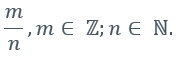
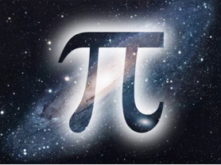

Ірраціональні числа
Ірраціональними називаються числа, які не можна представити у вигляді дробу вигляду
Ірраціональні числа можуть бути представлені нескінченними неперіодичними дробами.
Наприклад:

Цікаві факти
Число 𝜋 є ірраціональним числом?
Число 𝜋 є справді ірраціональним числом. У 1766 році німецький математик, фізик і астроном Йоганн Генріх Ламберт довів ірраціональність числа 𝜋. Десяткове представлення цьої константи ніколи не закінчується і не є періодичним. 𝜋=3.141592653589793238462643… Вивчення цієї математичної константи налічує вже більше двадцяти двох віків. Японський математик Ясумаса Канада зміг обчислити 1, 2 більйона чисел нескінченної послідовності.
Поміркуй!!!

До початку XVIII ст. сформувалися три тлумачення поняття ірраціональної величини:
- Ірраціональне число розглядали як корінь n-го степеня з цілого або дробового числа, коли результат добування кореня не можна виразити «точно» цілим або дробовим числом (давніше);
- Ірраціональне число трактували як межу, до якої його раціональні наближення можуть підійти як завгодно близько (це тлумачення йде від Стевіна і Валліса);
- Число розглядали як відношення однієї величини до другої величини такого самого роду, взятої за одиницю; коли величина не сумірна з одиницею, число називали ірраціональним (Ньютон, Декарт).

Знак кореня від Рене Декарта
- Еволюція знака радикала продовжувалась більше 500 років.
- Почитаючи з ХІІІ ст. італійські та інші європейські математики позначали корінь латинським словом Radix (корінь) або скорочено R.
- Тільки в 1637 р. Рене Декарт з’єднав знак кореня з горизонтальною рискою, застосувавши у своїй «Геометрії» сучасний знак кореня. Знак став загальновживаним лише на початку XVIII ст.